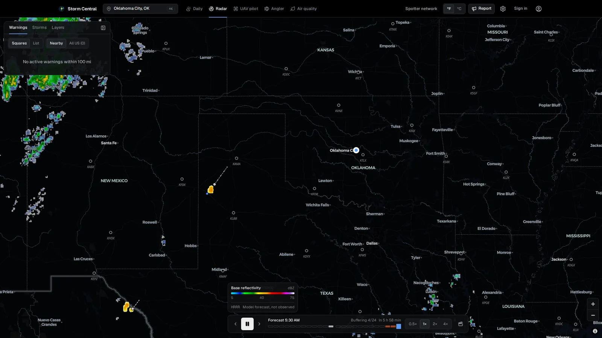
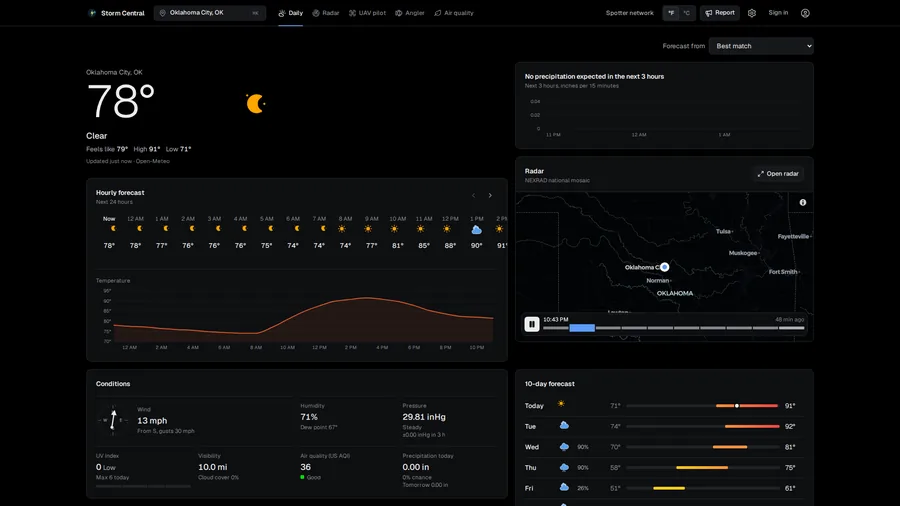
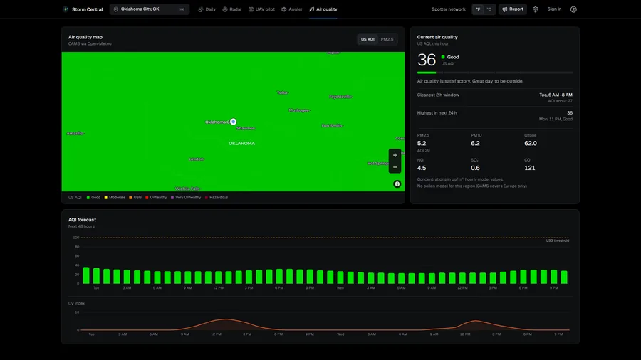
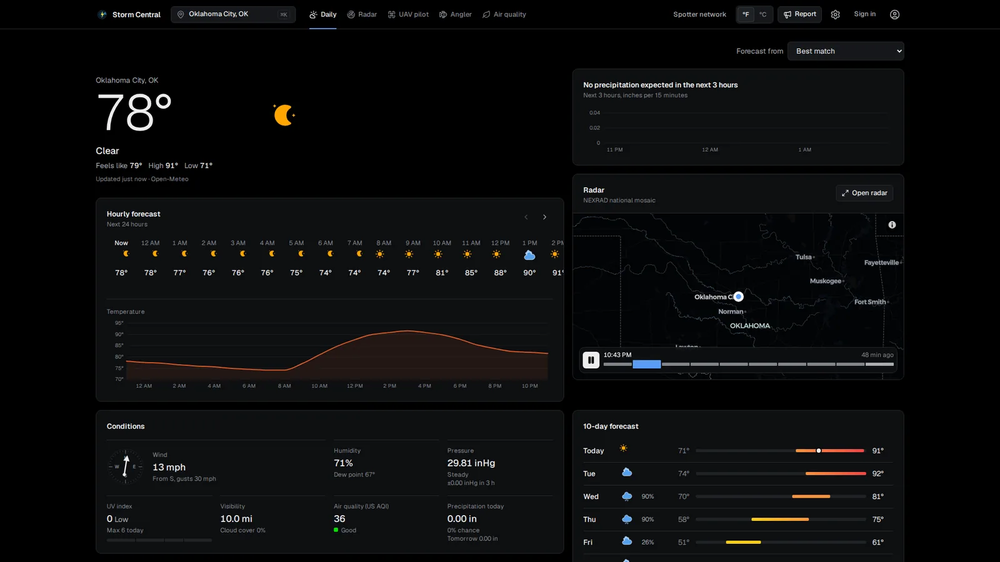
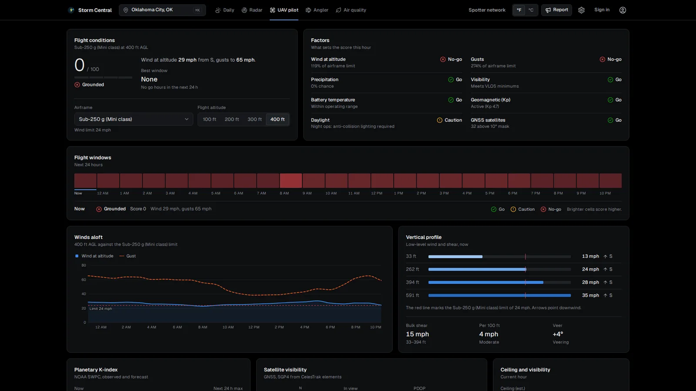
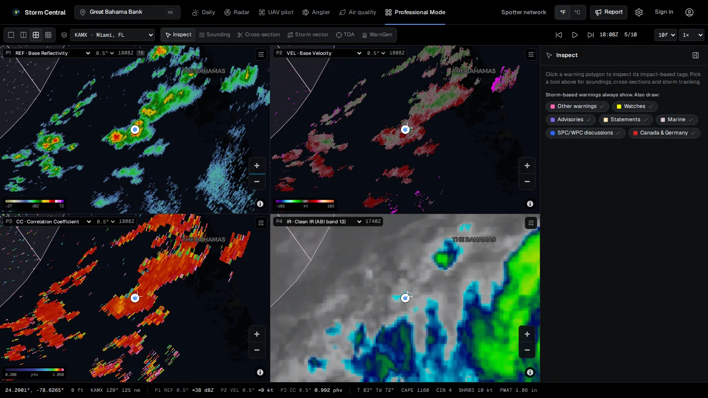

Live NEXRAD radar, severe weather alerts that tell you when the storm arrives, and forecasts from eleven models. Free, open source, with no
ads and no account needed.
Version 0.5.4 for Windows 10 and 11, macOS 13 or newer, Android 7 and newer, and any modern browser.
Storm Central

One app, five ways to read the sky
Switch modes with a tap or the 1 to 5 keys. Each one is built around the questions you actually ask before you head out.
Daily
Your day at a glance
A 15-minute nowcast, hourly and 10-day forecasts, and the forecasters' own notes from your local National Weather Service office, with
the jargon decoded. Pick from eleven forecast models, including ECMWF, GFS, the NWS Blend and ICON.
Compared with normal: records, rainfall this month, the week's departures
Storm Prediction Center tornado, hail and wind odds when you're in a risk area
Rainfall and flooding, fire weather and smoke, river gauges

Radar
Radar that keeps up with storms
The national mosaic or any single NEXRAD site, with velocity, correlation coefficient and the rest. Every watch, warning and advisory in
official colors, projected storm tracks with the arrival time at your location, and future radar: the next hour from how the storms are moving, then
six hours of model forecast.
SPC mesoscale discussions and watch boxes, and WPC heavy-rain discussions
Radar from Canada, Germany, Finland, the Netherlands and Japan, looping in step with NEXRAD
Lightning, storm reports, hail cores and rotation from NEXRAD storm cells
A radar archive: any day since 1995 with the warnings in effect then, and famous storms a tap away
Hurricane cones and tracks, and GOES satellite that loops with the radar
Live cameras: thousands of traffic, wildfire, river and volcano cameras, with the latest picture a tap away
Storm chasers live: who's streaming on YouTube right now, and spotters sharing their position on the map
A map that's yours: dark, light or streets, terrain shading or tilted 3D terrain, a cloud-free satellite map, and your own colours for borders, counties and roads
Your own layers: GRLevelX placefiles, KML and GeoJSON, by link or from a file
Export the loop as a GIF or video
UAV pilot
Know before you fly
A flyability score for your airframe, an hourly go/no-go strip, and wind at flight altitude against your drone's limit. Kp index, GNSS
satellites and precision, and the estimated cloud ceiling against the Part 107 clearance.
Wind profile at 10, 80, 120 and 180 m, with shear and veer
Satellite sky plot with count, PDOP and HDOP
Visibility and density altitude
Air and allergy
Air you can plan around
An air quality heatmap across the map, current AQI with health guidance, and the cleanest two-hour window to be outside. Pollen and UV
forecasts, and a breakdown of each pollutant.
48-hour AQI and UV forecast
Smoke and haze from wildfires
Angler mode, too: bite index, solunar periods and live river gauges

Daily


Daily
Radar
UAV pilot
Air and allergy
Warned before the storm arrives
Save up to ten places and Storm Central watches them for you. Windows and Mac keep checking from the tray or menu bar, and Android checks about every 15
minutes in the background, even with the app closed.
New warnings for any saved place, and whether you're inside the warned polygon, not just the county
Storms heading your way, with the arrival time, hail size and motion
Rain or snow starting soon, how hard and for how long
Lightning nearby, a morning briefing, and your own custom alerts
4:475G
Thursday, May 21
4:47
Storm CentralTornado Warning: HomeCleveland County until 5:15 PM CDT. You are inside the warned area. Take shelter now.
Storm CentralStorm heading toward WorkArriving in about 18 min. Hail up to 1.75 in, moving northeast at 35 mph.
Storm CentralRain starting in about 20 minModerate rain, lasting about 45 min.
Updated in 0.5.0
Professional mode
A forecaster-style radar workspace for spotters, chasers and anyone who reads radar for fun. Turn it on in Settings and it becomes the
sixth mode.
Professional mode

Up to nine synced panels
Pan, zoom and loop together, with each panel on the same moment and a crosshair that follows your cursor across all of them. Pop any panel, or the sounding and warning tools, out onto another monitor.
Raw NEXRAD, decoded
Correlation coefficient, ZDR, hydrometeor type and KDP at every tilt, plus digital VIL and echo tops. On a computer, any slice of the full radar volume, live as it's scanned or from the archive back to 1995. The readout shows the exact value under your cursor.
Soundings and cross-sections
Click anywhere for a model Skew-T with CAPE, CIN and lapse rates, and a hodograph with storm motion and helicity. Or draw a line for a vertical cross-section.
Storm tracking
A storm vector from two clicks, a time-of-arrival fan for your places, and a warning inspector with each warning's damage threat and tags.
WarnGen for spotters
Click the storm and a polygon is drawn along its track. Tag the hail, wind and tornado threat, check the warning text, and send it to signed-in spotters. Always marked unofficial.
Satellite and national products
GOES visible, infrared, water vapor, Air Mass and GeoColor, MRMS composite reflectivity and echo tops, and other countries' radar, all on the same loop.
3D radar volume
On a computer, click a storm to see every tilt of its Level II scan in 3D: the core, the overhang and how high the echoes reach, against a height scale and the model's freezing level. Drag to turn it around.
Colour tables
Classic NWS, plasma and other built-in tables, or import your GRLevelX .pal files. The legend and the cursor readout follow the table, and the values stay exact.
Meteograms and ensembles
Eight models side by side for any spot, including ECMWF's and NOAA's AI models, or one ensemble as a plume with its spread and mean.
11forecast models to choose from
28radar and satellite products in Professional mode
6modes: Daily, Radar, UAV pilot, Angler, Air, Pro
0ads, accounts or API keys required
Everything else it does
Built on free and open data from NOAA, the National Weather Service, Open-Meteo and other countries' weather services.
Make the map yours
Pick the basemap, add terrain shading or tilt into 3D terrain, and choose which borders, roads and labels show and in what colours. Save the look as a preset, or send it to a friend as a link.
Your settings everywhere
Sign in and turn on sync, and your map style, places, alerts, colour tables and Pro layout follow you between the Windows and Mac apps, the web and your phone.
Broadcast mode
The radar as a clean feed for your stream, on its own page (Settings links to it): your name and logo, a clock, a lower third for the warning you pick and a warnings ticker. Save scenes, play them as a tour, and export clips with the graphics.
Draw on the map
Pen, lines, arrows, circles and text right on the radar, with undo. Handy for pointing out the hook or where a storm is headed.
Live cameras
About 5,700 cameras on the radar map: California traffic, wildfire cameras across the West, and river and volcano cameras from USGS. Tap one for its latest picture.
Storm chasers live
See which storm chasers are streaming on YouTube and watch in the app. Chasing yourself? Share your position with other spotters for a few hours.
Storm arrival times
The storm motion in each NWS warning becomes a projected track and a live arrival estimate for where you are.
Spotter network
Post geotagged reports with photos, verify each other's, and see them on the radar. Reports that match an official NWS storm report are marked Confirmed by NWS.
Every watch and advisory
Watches, advisories, statements and marine products on the map in official colors, along with SPC and WPC discussions. Pick which ones to show.
Radar beyond the US
Canada, Germany, Finland, the Netherlands and Japan, straight from their weather services. Canadian and German warnings too.
Widgets and tray
Five Android home-screen widgets with the top warning, and a Windows tray or Mac menu bar icon that shows the temperature and any warning.
Works offline
The app is cached, and the last forecast stays readable for three days with no signal, labelled with when it was saved.
English and Spanish
Follows your device's language, or pick one in Settings. Notifications and widgets are translated too.
Custom alerts
"Wind at 120 m below 15 mph" or "AQI above 100": any number, for any saved place, once a day when the forecast crosses it.
Themes and add-ons
Light, dark or system theme, every unit set separately, and themes or map layers installed from GitHub.
Open source
Every line is on GitHub. No paid weather APIs, no tracking, and the Windows app runs its own server on your PC.
See it in motion
A 50-second tour of the app.
Get Storm Central
Free on every platform. The apps update themselves, or tell you, when a new version is out.
The installer isn't code-signed yet, so Windows may say "Windows protected your PC". Choose More info, then Run anyway. The Store version
installs without that step.
Open the .dmg and drag Storm Central to Applications. The first time you open it, if macOS says it can't verify the developer, choose
Open Anyway in System Settings, Privacy & Security (once). The app tells you when a new version is out.